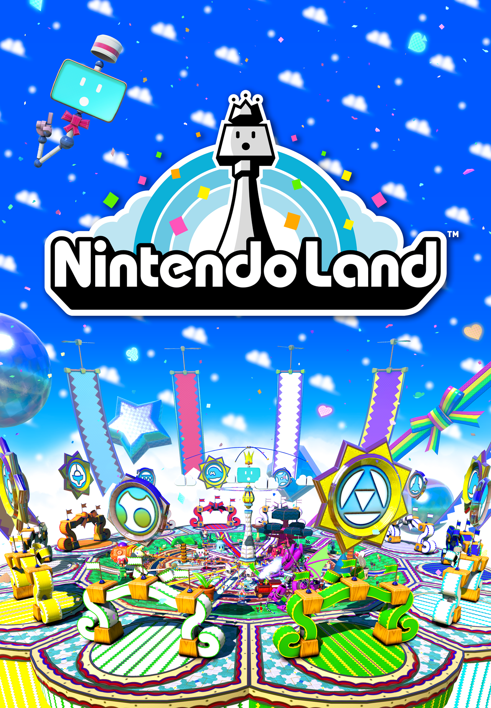
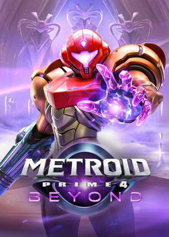
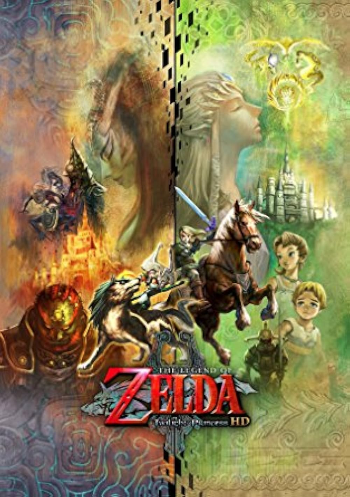

t

Nintendo Land
Enjoy a happy get-together with friends or family
as you embark on various challenges like Mario Run,
Captain Falcon's Twister Race, and Octopus Dance.
Guided by our favorite flying TV, Monita, you will
have laughs, competitive games, and fun adventures
in this AR Trails edition of the fan-beloved game.

Metroid Prime 4
Beyond
Explore planets and battle all kinds of monsters from the space pirates to the mighty Sylux in the AR Trails edition of Metroid Prime 4: Beyond. Unlock brand new features and an entirely new chapter of Samus' story in this adventure.

Legend of Zelda:
Twilight Princess
Another classic masterpiece recieves a new look with an incredible iteration of the game. The AR Trails introduces an immersive, first person twist on the amazing visuals, terrifying beasts, and timeless music of this editor's choice.